And the riders who make every kilometre better.
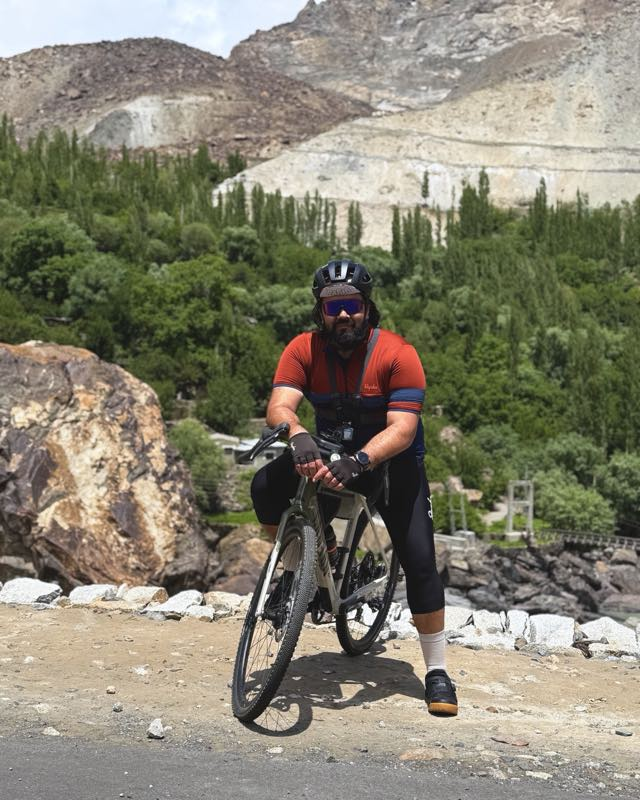
An accountant and tax advisor based in Scotland. Cycling Markhor is his dream project — built trip by trip, every time he trades the spreadsheets for the saddle.
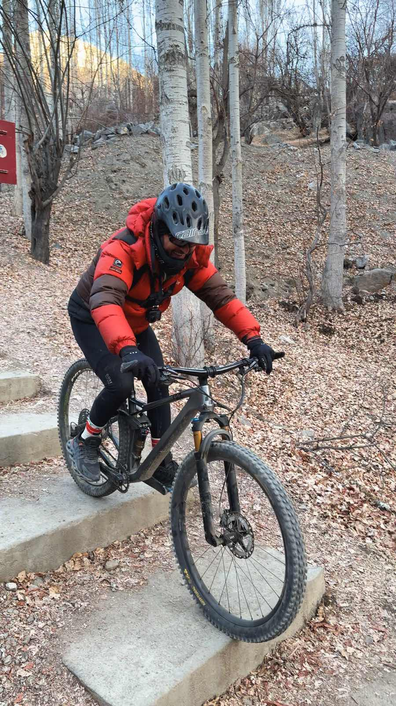
President of the Baltistan Cycling Club, and the man who has been renting bikes and guiding riders in Skardu for years. The voice on the other end of our WhatsApp.
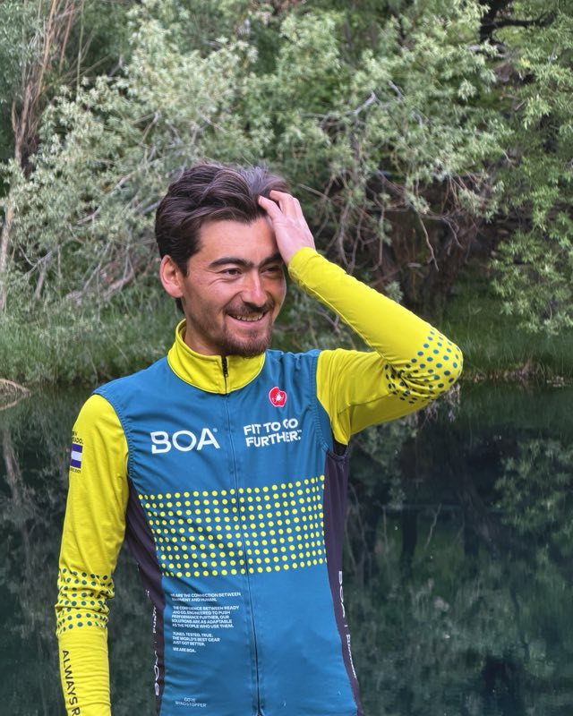
A mutual friend and a kind soul. An amazing guide who knows every spring, every shortcut, and every cat along the way.
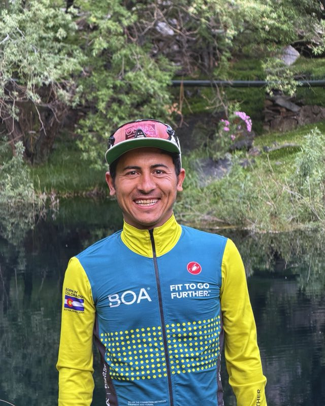
A mutual friend and a seriously good cyclist. One of our clips is titled "Broko is our hero" — tap his photo and you'll see why.
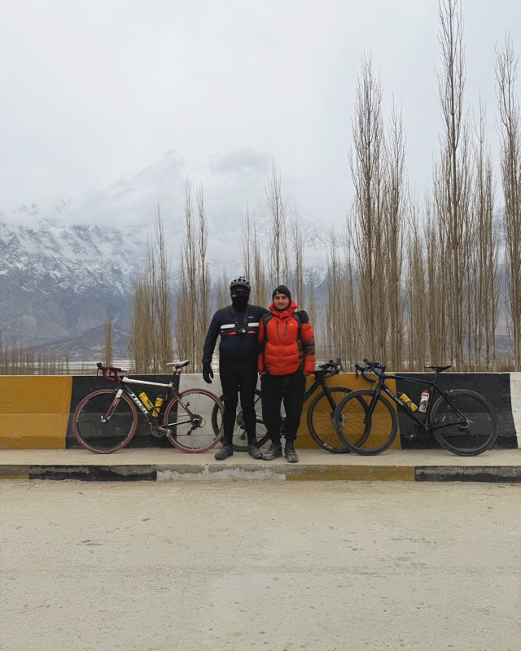
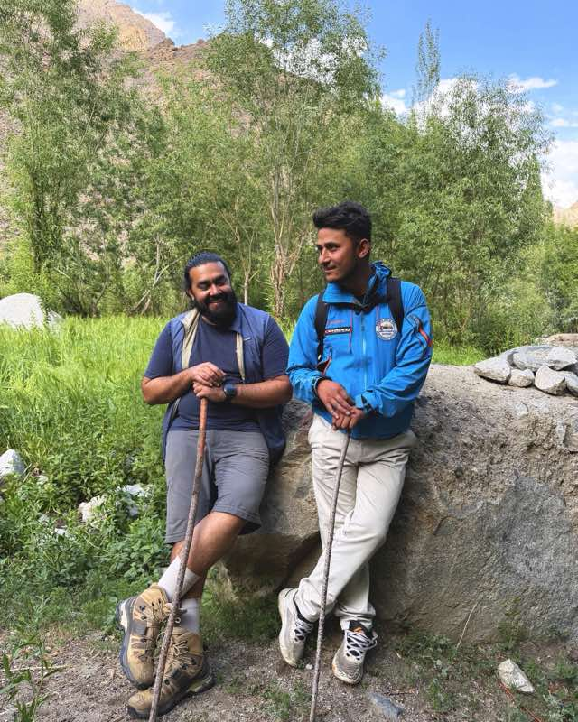
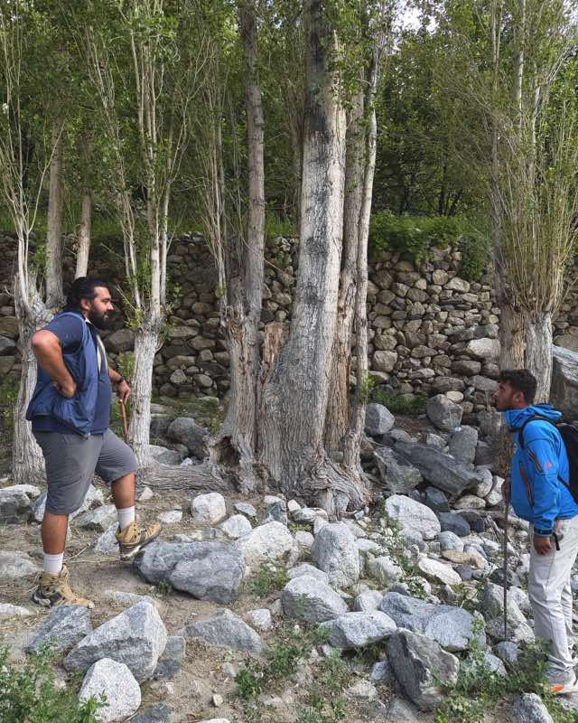
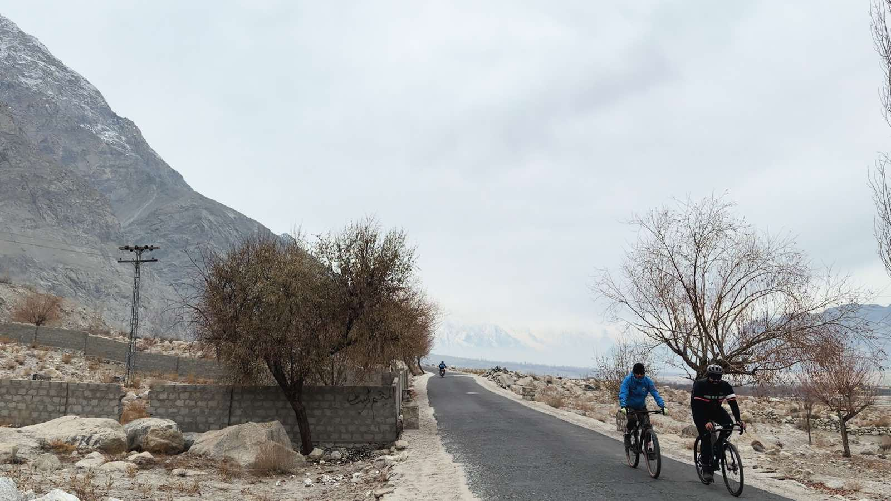
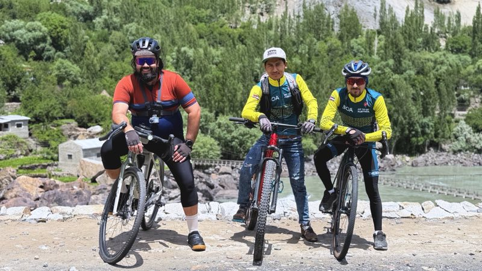
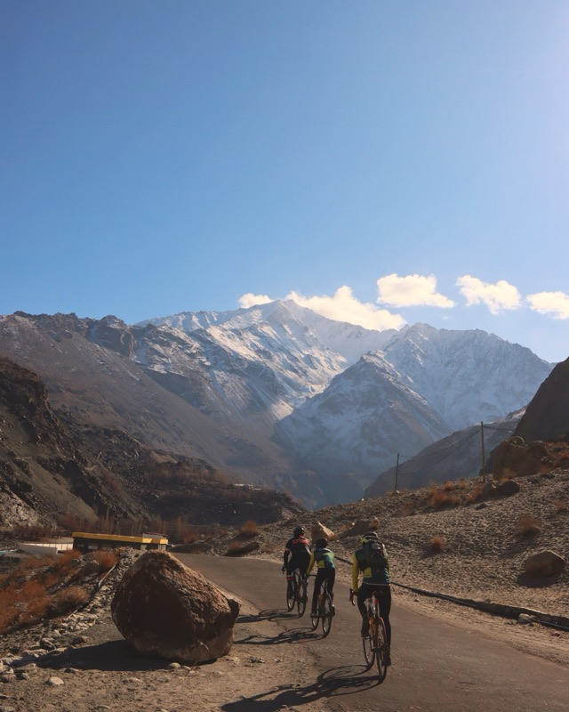
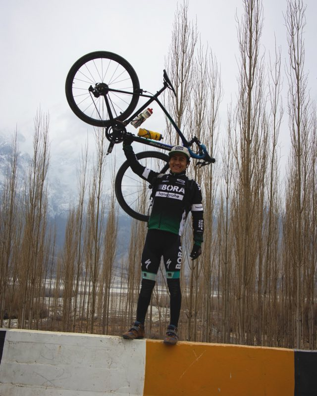
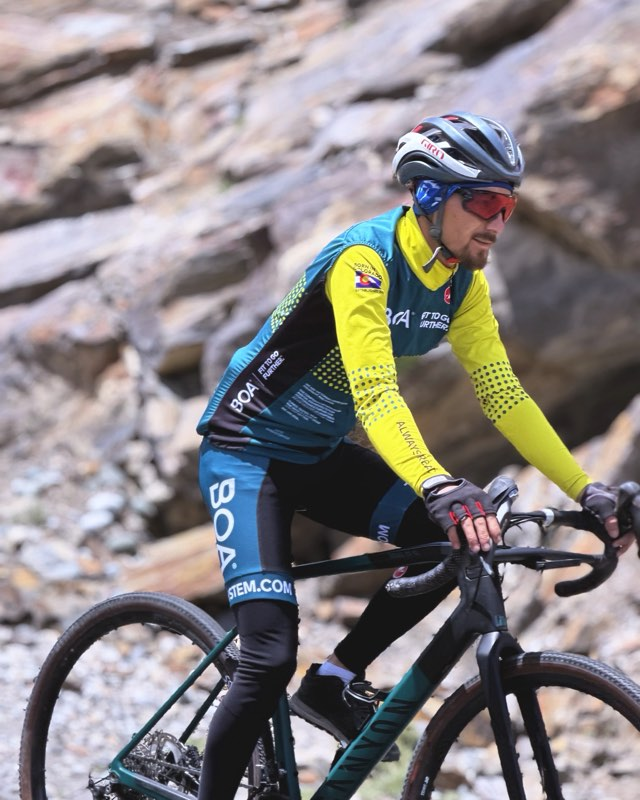
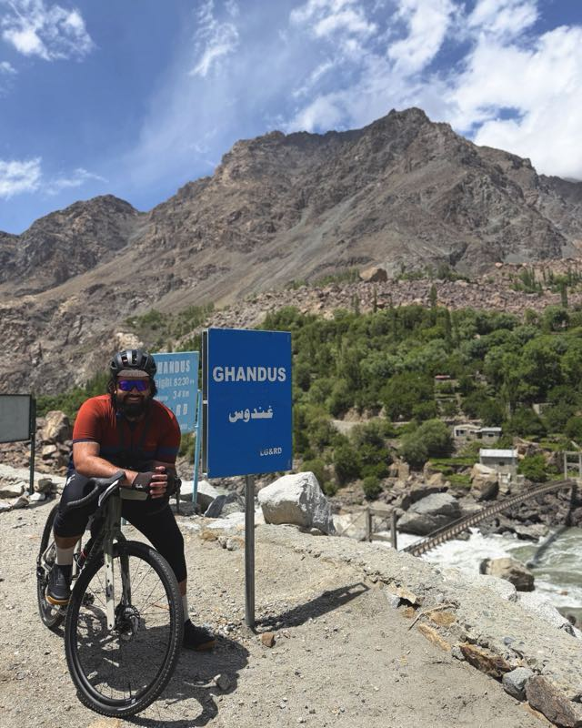
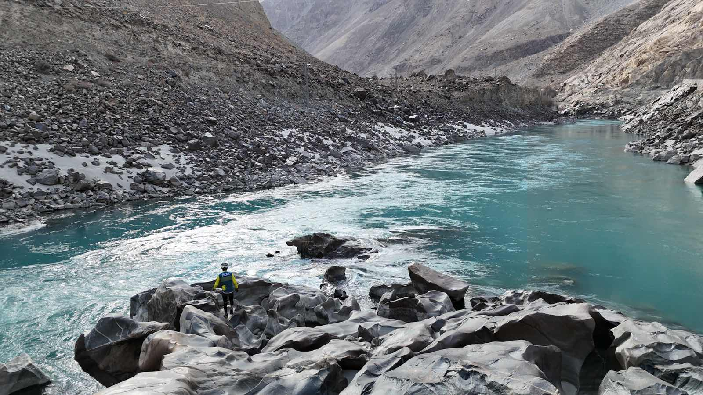